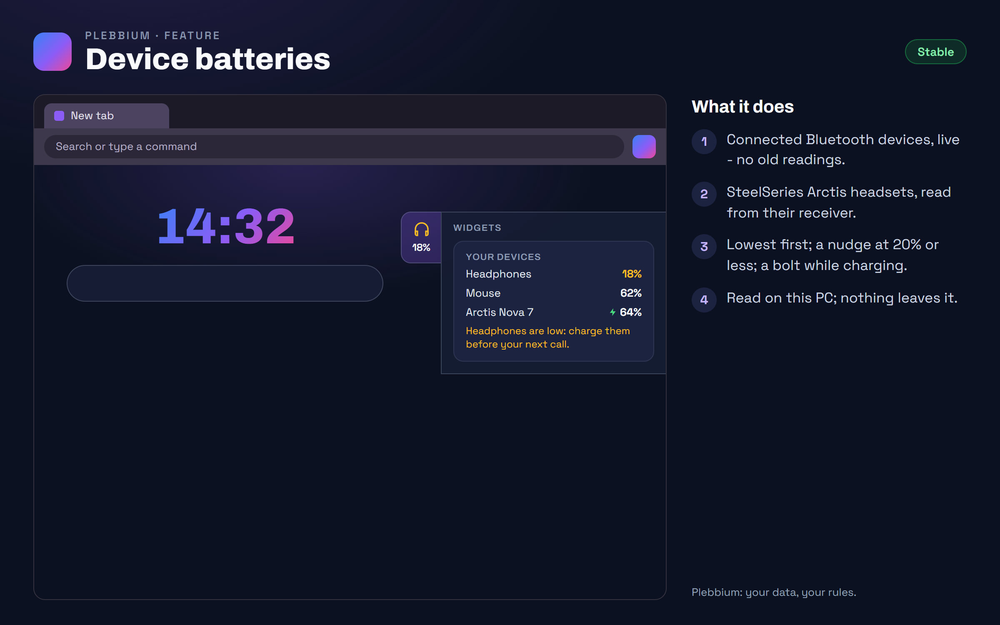

All features › Shipped › Device batteries
Device batteries
Stablesince 3620A card in the new tab's widgets strip with the batteries of your connected Bluetooth headphones, mice, keyboards, phones and controllers, your SteelSeries Arctis headset on its USB receiver, and your laptop - lowest first, with a nudge when one is low.

How to use it
- Look: rest on the new tab's right edge, or click it.
- Off: Plebbium settings › Widgets › Show your devices' batteries.
When it arrived
156.0.8078.3619Beta 7 Nov 2026 · Stable 13 Nov 2026 (3620)
Device batteries in the widgets strip.
156.0.8078.3620Beta 8 Nov 2026 · Stable 13 Nov 2026
Only connected Bluetooth devices; SteelSeries Arctis headsets; a charging bolt.
Why it works this way
What Windows knows
The levels are the ones Windows shows in Settings › Bluetooth & devices; Plebbium reads them on your PC, and nothing leaves it.
Not every device
Devices on their own USB receiver often don't tell Windows their battery. SteelSeries Arctis headsets are the exception: Plebbium asks their receiver itself, as SteelSeries GG does (tested on an Arctis Nova 7; the other Arctis models follow the open-source HeadsetControl project's notes).